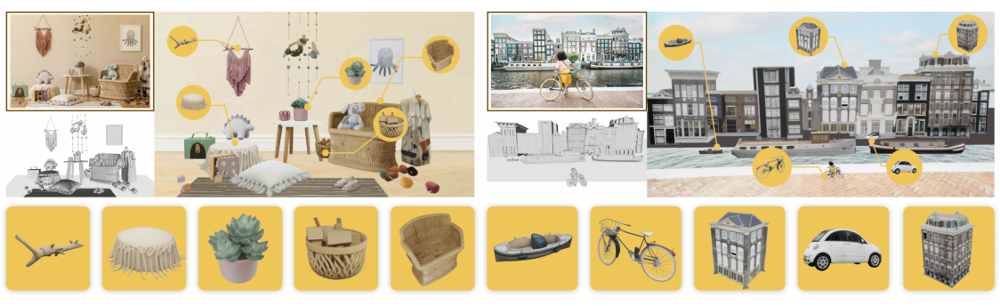
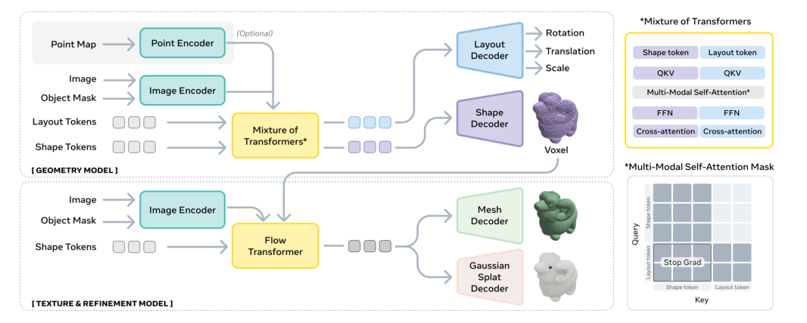
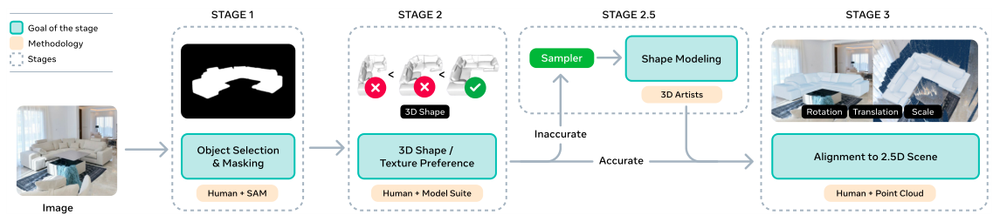
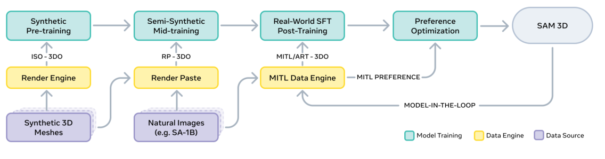
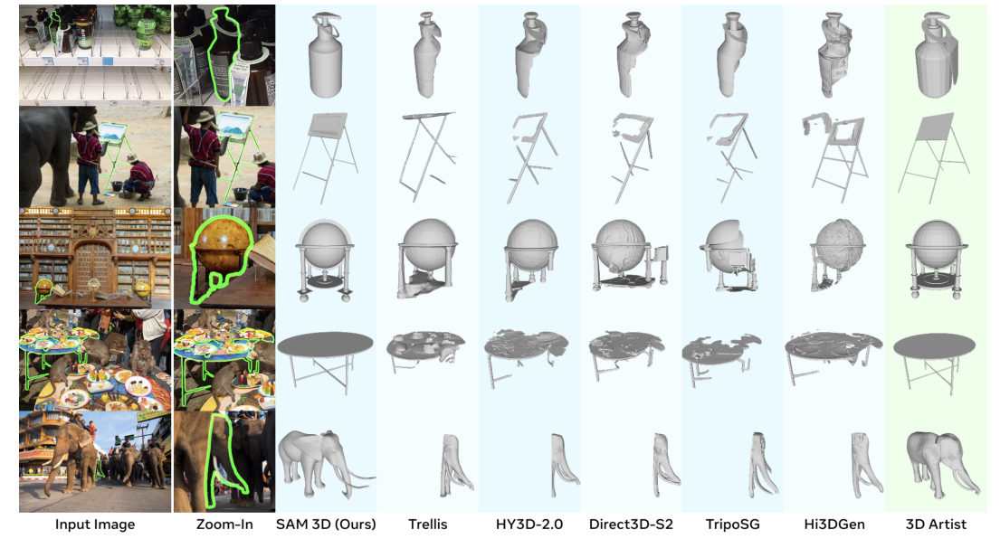

Background & Motivation
SAM 3D 是一個視覺接地(visually grounded)的生成式 3D 重建模型:輸入單張自然影像 + 一個物件遮罩 \(M\),就輸出該物件的完整 3D 形狀、材質與場景位姿(shape / texture / layout)。它專攻遮擋與雜亂的真實場景,靠的是「辨識驅動重建」的學習先驗,而非多視角幾何。關鍵武器是一套人機協作(MITL)資料引擎 + LLM 式多階段訓練,真實影像人類偏好勝率至少 5:1。
SAM 3D is a visually grounded generative 3D reconstruction model: given a single natural image plus one object mask \(M\), it outputs that object's full 3D shape, texture, and scene layout. It targets occluded, cluttered real-world scenes using recognition-driven learned priors rather than multi-view geometry. The key weapon is a model-in-the-loop (MITL) data engine + LLM-style multi-stage training, winning human-preference tests on real images by at least 5:1.

如果只有 30 秒In 30 seconds
- 問題 — 想從單張自然影像重建物件的完整 3D(形狀+材質+位姿),但既有 image-to-3D 只在乾淨、置中的單物件上訓練,一遇遮擋、雜亂、遠距就崩;更根本的是「自然影像 ↔ 3D 真值」的配對資料極度稀缺(3D 資料瓶頸)。
- Problem — Reconstruct an object's full 3D (shape+texture+pose) from a single natural image, but existing image-to-3D is trained on clean, centered single objects and breaks under occlusion, clutter, distance; more fundamentally, paired "natural image ↔ 3D ground truth" data is extremely scarce (the 3D data barrier).
- 方法 — 把重建當成條件生成 \(p(S,T,R,t,s\mid I,M)\)(兩階段 latent flow matching);再用MITL 資料引擎——人類不會建 mesh,但會「從 \(N\) 個候選挑最好 + 對齊姿態」,把生成問題轉成驗證問題——配合合成預訓練 → 半合成 mid-training → 真實 SFT+DPO 的 LLM 式配方。
- Method — Cast reconstruction as conditional generation \(p(S,T,R,t,s\mid I,M)\) (two-stage latent flow matching); build a MITL data engine—humans can't make meshes but can pick the best of \(N\) candidates and align pose, turning generation into verification—plus an LLM-style recipe: synthetic pretrain → semi-synthetic mid-train → real SFT + DPO.
- 結果 — 真實影像人類偏好物件 5:1、場景 6:1勝過前 SOTA;在自建困難基準 SA-3DAO 上 F1@0.01 0.2344(對手最佳 ~0.16);首次做到 shape+layout 聯合生成,ADD-S@0.1 2% → 77%。
- Results — Human preference on real images: 5:1 (objects), 6:1 (scenes) over prior SOTA; on the self-built hard benchmark SA-3DAO, F1@0.01 0.2344 (best rival ~0.16); first to jointly generate shape+layout, ADD-S@0.1 2% → 77%.
領域脈絡Field context
電腦視覺傳統上以多視角幾何(binocular stereo、SfM、MVS、NeRF)作為 3D 的主要訊號,需要多張校準影像。但心理學家早就發現人類能從單張影像感知深度與形狀——靠所謂「圖像線索(pictorial cues)」:陰影、紋理,尤其是辨識(familiar-object cue)。Roberts(1963)即指出:一旦影像被辨識為已知物件,其 3D 形狀與位姿就能被回復。SAM 3D 正是把「辨識驅動重建」這個老想法,用現代生成模型 + 大規模資料重新實現。
Computer vision has traditionally treated multi-view geometry (binocular stereo, SfM, MVS, NeRF) as the primary 3D signal, needing many calibrated views. Yet psychologists long ago showed humans perceive depth and shape from a single image—via "pictorial cues": shading, texture, and above all recognition (the familiar-object cue). Roberts (1963) argued that once an image is recognized as a known object, its 3D shape and pose can be recovered. SAM 3D revives this recognition-driven idea with modern generative models + massive data.
這是把 SAM(分割)資料引擎哲學 + LLM 訓練配方整包搬進 3D:核心賭注不是「更聰明的網路」,而是「如何在沒有 3D 真值的世界裡,規模化生產真實影像的 3D 標註」。答案是:讓人類做他們擅長的「選擇與對齊」,讓模型做它擅長的「生成候選」,兩者組成飛輪。
This ports the SAM (segmentation) data-engine philosophy + the LLM training recipe wholesale into 3D: the bet isn't "a smarter net" but "how to mass-produce 3D annotations for natural images in a world with no 3D ground truth." The answer: let humans do what they're good at (selecting & aligning) and the model do what it's good at (proposing candidates), forming a flywheel.
核心洞見 · KEY INSIGHTSKEY INSIGHTS
這篇值得帶走的不只是「又一個 image-to-3D」,而是底下幾個觀念:
What's worth taking away is not "yet another image-to-3D" but these ideas:
- 辨識 → 重建。 單張影像的完整 3D 靠學到的先驗與辨識補齊看不見的部分(背面、被遮擋處),而非測量。這讓模型能泛化到沒見過的物件(由見過的「零件」組成)。
- Recognition → reconstruction. Full 3D from one image completes the unseen (back sides, occluded parts) via learned priors and recognition, not measurement—enabling generalization to novel objects (assembled from seen "parts").
- 把「生成」變「驗證」以破解資料瓶頸。 一般人不會做 3D mesh,但能從 \(N\) 個候選挑最好、對齊姿態。用 best-of-N + 人類偏好,拿到 ~100 萬張影像、314 萬 mesh 的真實 3D 標註——前所未有的規模。
- Turn "generation" into "verification" to break the data barrier. People can't make meshes but can pick the best of \(N\) and align pose. Best-of-N + human preference yields ~1M images and 3.14M meshes of real 3D annotation—unprecedented scale.
- LLM 式多階段訓練 + 資料飛輪。 合成預訓練建詞彙 → 半合成 mid-training 學遮擋/mask-following → 真實 SFT+DPO 對齊人類偏好;model-in-the-loop 讓模型與資料互相拉抬,Elo 近乎線性成長。
- LLM-style multi-stage training + a data flywheel. Synthetic pretrain builds vocabulary → semi-synthetic mid-train learns occlusion/mask-following → real SFT+DPO aligns to preference; model-in-the-loop makes model and data lift each other, with near-linear Elo growth.
- Segment Anything 家族的 3D 成員。 SAM 3D 吃 SAM / SAM 2 / SAM 3 產生的遮罩當輸入,把每個被分割的 2D 物件「舉」到完整 3D。它不自己做分割,而是分割之後的「3D 化」那一環,且對遮罩來源與精度不敏感。
- The 3D member of the Segment Anything family. SAM 3D consumes masks from SAM / SAM 2 / SAM 3 and lifts each segmented 2D object to full 3D. It does not segment itself—it's the "3D-ify" stage after segmentation, and is agnostic/robust to the mask source and its precision.
Problem Diagnosis
現況 vs 痛點Status quo vs pain points
| 現有做法Existing approach | 它的痛點Its pain point |
|---|---|
| 多視角幾何Multi-view geometry (SfM / MVS / NeRF) | 需要多張校準影像;單張影像根本拿不到完整 3D,也只重建可見表面。Needs many calibrated views; a single image can't give full 3D and only recovers the visible surface. |
| 單物件 image-to-3DSingle-object image-to-3D (Trellis, Hunyuan3D, TripoSG…) | 只在乾淨、置中、無遮擋的單物件上訓練;自然場景裡物件遠、被遮擋、雜亂就失敗,且不預測 layout。Trained on clean, centered, unoccluded single objects; fails when objects are distant/occluded/cluttered, and predicts no layout. |
| 3D 資料集3D datasets (ShapeNet, Objaverse-XL) | 多為合成單物件、無配對真實影像;真實 3D 資料集又小又偏室內。模型只能學到「渲染視角」。Mostly synthetic single objects with no paired real images; real 3D datasets are small and indoor-biased. Models only learn "rendered views." |
| 人工標 3DManual 3D labeling | 一般標註者無法直接產生 mesh;連專業 3D 藝術家一個 mesh 都可能花「數分鐘到 5 小時以上」。Generalist annotators can't author meshes; even pro 3D artists take "minutes to over 5 hours" per mesh. |
核心問題:「能否從單張自然影像,對任意被遮擋/雜亂的物件,重建出完整的 3D 形狀+材質+場景位姿——而且有辦法規模化取得訓練資料?」
The core question: "Can we reconstruct full 3D shape + texture + scene pose for any occluded/cluttered object from a single natural image—and actually obtain the training data at scale?"
Gap 表 — 誰缺什麼,SAM 3D 怎麼補Gap table — who lacks what, and how SAM 3D fills it
| 方法Method | 限制Limitation | SAM 3D 如何補上How SAM 3D fills it |
|---|---|---|
| Trellis / Hunyuan3D / TripoSG 單物件生成single-object gen |
孤立物件訓練,遮擋/雜亂即崩,無 layout。Isolated-object training, breaks on occlusion/clutter, no layout. | 用 render-paste + MITL 真實資料學遮擋補全、mask-following,並聯合預測 layout。Learns occlusion completion, mask-following from render-paste + MITL real data, and jointly predicts layout. |
| Megapose / FoundationPose pose 兩段式管線two-stage pose pipeline |
model-based:先取 shape 再估 pose,仰賴 CAD/已知模型,限桌面/街景/室內。Model-based: shape then pose, needs CAD/known models, limited to tabletop/street/indoor. | model-free 聯合生成 shape+pose,跨物種與多樣場景。Model-free joint generation of shape+pose across object types and diverse scenes. |
| MIDI 聯合場景生成joint scene gen |
聯合但受限於有支撐面的室內場景。Joint but restricted to supporting-surface indoor scenes. | 以 mask prompt 指定物件,逐物件重建,適用範圍廣得多。Uses a mask prompt to pick objects, reconstructs per-object, far broader coverage. |
| ShapeNet / Objaverse-XL 3D 資料3D data |
合成單物件,無配對真實影像。Synthetic single objects, no paired real images. | MITL 資料引擎造出 ~100 萬真實影像配 314 萬 mesh + 7M+ 偏好對。A MITL data engine yields ~1M real images with 3.14M meshes + 7M+ preference pairs. |
注意這裡的痛點一半是模型(遮擋/場景),一半是資料(沒有真值)。SAM 3D 的洞見是:這兩件事其實是同一件——沒有真實影像的 3D 資料,模型就學不會真實場景。因此它把「造資料」本身當成一等公民,而不是只調架構。
Note the pain points are half model (occlusion/scenes), half data (no ground truth). SAM 3D's insight: they're the same problem—without 3D data on real images, the model never learns real scenes. So it treats "making data" as a first-class citizen, not just an architecture tweak.
Core Method
問題定義:反轉「拍照」這個映射Problem setup: inverting the photographic map
拍照把 3D 物件壓成 2D 像素,由影像 \(I\) 中的遮罩 \(M\) 指定。SAM 3D 要反轉它:物件有形狀 \(S\)、材質 \(T\),以及相機座標下的旋轉/平移/縮放 \((R,t,s)\)。因為 3D→2D 有損,故建模為條件分佈,並訓練生成模型 \(q\) 去逼近:
A photograph collapses a 3D object into 2D pixels, designated by a mask \(M\) in image \(I\). SAM 3D inverts it: the object has shape \(S\), texture \(T\), and rotation/translation/scale \((R,t,s)\) in camera coordinates. Since 3D→2D is lossy, model it as a conditional distribution and train a generative \(q\) to approximate it:
關鍵體認:單張影像的 3D 本質上是多解、不確定的(背面看不到),所以答案不是唯一 mesh,而是一個分佈——輸出是「合理樣本」。
Key realization: single-image 3D is inherently multi-solution and uncertain (back sides are unseen), so the answer is a distribution, not a unique mesh—outputs are "plausible samples."
架構:兩階段 latent flow matchingArchitecture: two-stage latent flow matching

建立在 Trellis(Xiang 2025)的兩階段結構化 latent 之上,但不同於 Trellis 只重建孤立物件,SAM 3D 還預測 layout,組成連貫的多物件場景。
Built on Trellis (Xiang 2025) two-stage structured latents, but unlike Trellis (isolated objects only), SAM 3D also predicts layout, forming coherent multi-object scenes.
- Geometry 模型(1.2B):MoT flow transformer,建模 \(p(O,R,t,s\mid I,M)\),\(O\in\mathbb{R}^{64^3}\) 粗 voxel、\(R\in\mathbb{R}^6\) 為 6D 旋轉。
- Geometry model (1.2B): MoT flow transformer modeling \(p(O,R,t,s\mid I,M)\), with coarse voxels \(O\in\mathbb{R}^{64^3}\) and 6D rotation \(R\in\mathbb{R}^6\).
- Texture & Refinement 模型(600M):sparse latent flow transformer,建模 \(p(S,T\mid I,M,O)\)。
- Texture & Refinement model (600M): a sparse latent flow transformer modeling \(p(S,T\mid I,M,O)\).
- 輸入編碼:DINOv2 給出 4 組 conditioning tokens(裁切物件+其遮罩、全圖+其遮罩);選配 LiDAR/單目深度的 point map \(P\)。
- Input encoding: DINOv2 yields 4 sets of conditioning tokens (cropped object+mask, full image+mask); an optional point map \(P\) from LiDAR/monocular depth.
關鍵想法一:辨識式生成(flow matching)Key idea 1: recognition-based generation (flow matching)
預/中訓練用rectified conditional flow matching(Liu 2022):在噪聲 \(x_0\) 與資料 latent \(x_1\) 之間走直線 \(x_\tau=(1-\tau)x_0+\tau x_1\),學一個速度場逼近 \(x_1-x_0\):
Pre/mid-training uses rectified conditional flow matching (Liu 2022): a straight path \(x_\tau=(1-\tau)x_0+\tau x_1\) between noise \(x_0\) and data latent \(x_1\), learning a velocity field toward \(x_1-x_0\):
其中 \(c\) 是條件(\(I,M\) 的 DINOv2 編碼,選配 \(P\))。推論時解此 ODE 生成 latent,再 decode 成 mesh/splats。[導讀補充] 上式為 rectified flow 的標準形式;論文以名稱引用,細節在附錄 C.2。
Here \(c\) is the conditioning (DINOv2 encodings of \(I,M\), optional \(P\)). At inference, solve this ODE to generate a latent, then decode to mesh/splats. [guide note] The equation is the standard rectified-flow form; the paper cites it by name (details in App. C.2).
關鍵想法二:MITL 資料引擎(把生成變驗證)Key idea 2: the MITL data engine (generation → verification)

核心把戲:人類不做生成,只做「選擇」與「對齊」。對每個物件用一組模型(檢索、text-to-3D、image-to-3D,含 SAM 3D 自身)產生 \(N=8\) 個候選,人類做 best-of-N 挑最佳並評分 \(r\);低於門檻 \(\alpha\) 的成為 DPO 的負樣本 \(D^-\)。整個引擎可視為一個 API:餵入當前模型 \(q\),回傳訓練樣本 \(D^+\)、品質分 \(r\in[0,1]\) 與被拒候選 \(D^-\)。
The core trick: humans never generate—only "select" and "align." For each object, an ensemble (retrieval, text-to-3D, image-to-3D incl. SAM 3D itself) produces \(N=8\) candidates; humans do best-of-N selection and rate quality \(r\); those below threshold \(\alpha\) become DPO negatives \(D^-\). The engine is an API: feed the current model \(q\), get back training samples \(D^+\), quality \(r\in[0,1]\), and rejected candidates \(D^-\).
冷啟動時初始模型很爛,故先大量借助檢索/現成模型;隨訓練推進,SAM 3D 自己最終產出 ~80% 的標註資料。model-in-the-loop 讓資料與模型互相拉抬——「造資料」變成對齊的副產品。
At cold start the initial model is weak, so it leans on retrieval/off-the-shelf models; as training proceeds, SAM 3D itself ends up producing ~80% of annotated data. Model-in-the-loop lets data and model lift each other—"making data" becomes a byproduct of alignment.
關鍵想法三:LLM 式多階段訓練Key idea 3: LLM-style multi-stage training

SFT 之後接 DPO(Rafailov 2023),用資料引擎 Stage 2 的 \(D^+/D^-\) 對消除人類敏感的瑕疵(不對稱、破洞):
After SFT comes DPO (Rafailov 2023), using \(D^+/D^-\) pairs from data-engine Stage 2 to eliminate human-salient defects (asymmetry, holes):
[導讀補充] 上式為 DPO 標準形式;論文引用 DPO 並用於 flow-matching 模型,細節在附錄 C.3。
[guide note] Standard DPO form; the paper cites DPO and adapts it to the flow-matching model (App. C.3).
符號白話對照Symbols in plain words
| \(I,\;M\) | 輸入影像、指定「要重建哪個物件」的遮罩(來自 SAM 系列)。Input image; mask designating which object to reconstruct (from the SAM series). |
| \(S,\;T\) | 物件的 3D 形狀、材質(可 decode 成 mesh 或 Gaussian splats)。The object's 3D shape and texture (decodable to mesh or Gaussian splats). |
| \(R,t,s\) | layout:6D 旋轉 \(R\in\mathbb{R}^6\)、平移 \(t\in\mathbb{R}^3\)、縮放 \(s\in\mathbb{R}^3\)(相機座標)。Layout: 6D rotation \(R\in\mathbb{R}^6\), translation \(t\in\mathbb{R}^3\), scale \(s\in\mathbb{R}^3\) (camera frame). |
| \(O\) | Geometry 模型輸出的粗 voxel 形狀,\(O\in\mathbb{R}^{64^3}\),餵給第二階段細化。Coarse voxel shape from the Geometry model, \(O\in\mathbb{R}^{64^3}\), fed to stage-2 refinement. |
| \(N,\;\alpha\) | best-of-N 的候選數(預設 8);\(\alpha\) 是品質門檻(隨訓練漸升,像 curriculum)。Best-of-N candidate count (default 8); \(\alpha\) the quality threshold (rises over time, curriculum-like). |
| \(D^+,\;D^-\) | 被選中的訓練樣本 / 被拒的較差候選,構成 DPO 偏好對。Chosen training sample / rejected worse candidates, forming DPO preference pairs. |
Experimental Evidence
3D 形狀:對 image-to-3D SOTA(Tab.2)3D shape vs image-to-3D SOTA (Tab.2)
| 模型Model | F1@0.01 ↑ SA-3DAO | vIoU ↑ | Chamfer ↓ | EMD ↓ | Uni3D ↑ ISO3D |
|---|---|---|---|---|---|
| Trellis | 0.1475 | 0.1392 | 0.0902 | 0.2131 | 0.3698 |
| HY3D-2.0 | 0.1574 | 0.1504 | 0.0866 | 0.2049 | 0.3662 |
| Direct3D-S2 | 0.1513 | 0.1465 | 0.0962 | 0.2160 | 0.3653 |
| TripoSG | 0.1533 | 0.1445 | 0.0844 | 0.2057 | 0.3687 |
| Hi3DGen | 0.1629 | 0.1531 | 0.0937 | 0.2134 | 0.3594 |
| SAM 3D | 0.2344 | 0.2311 | 0.0400 | 0.1211 | 0.3707 |
在困難真實集 SA-3DAO 上全面且大幅領先(F1 幾乎翻倍、Chamfer 減半);在乾淨孤立物件 ISO3D 上只是持平或略勝——這正是它的定位:贏在真實、雜亂、遮擋。
On the hard real set SA-3DAO it leads across the board by a wide margin (F1 nearly doubles, Chamfer halves); on clean isolated ISO3D it only matches or slightly beats—exactly its positioning: wins where scenes are real, cluttered, occluded.
3D 場景 layout(Tab.3,節選)3D scene layout (Tab.3, excerpt)
| 方法Method | 3D IoU ↑ SA-3DAO | ADD-S@0.1 ↑ SA-3DAO | 3D IoU ↑ ADT | ADD-S@0.1 ↑ ADT |
|---|---|---|---|---|
| HY3D-2.0 + FoundationPose (pipeline) | 0.2937 | 0.5396 | 0.3864 | 0.5992 |
| SAM 3D + FoundationPose (pipeline) | 0.2837 | 0.5079 | 0.3661 | 0.6495 |
| MIDI (joint) | — | — | 0.0336 | 0.0175 |
| SAM 3D (joint) | 0.4254 | 0.7232 | 0.4970 | 0.7673 |
SAM 3D 的聯合 shape+layout 生成大勝兩段式 pipeline 與聯合模型 MIDI;論文標誌性數字:ADD-S@0.1 從 2% → 77%,是「真實世界聯合 layout」的新能力。
SAM 3D's joint shape+layout generation beats both two-stage pipelines and the joint model MIDI; the headline number: ADD-S@0.1 from 2% → 77%—a new real-world joint-layout capability.
人類偏好(Fig.8)Human preference (Fig.8)
在真實影像的 head-to-head 偏好測試中,SAM 3D 單物件 ≥ 5:1、場景 ≈ 6:1 勝過前 SOTA。材質比較(給定 SAM 3D 形狀,只比材質)時,標註者也顯著偏好 SAM 3D。[導讀補充] 5:1 意即約 83% 的兩兩對決中被選為較佳。
In head-to-head preference tests on real images, SAM 3D beats prior SOTA by ≥ 5:1 (single objects) and ≈ 6:1 (scenes). On texture (fixing SAM 3D shape, comparing only texture), annotators also strongly prefer SAM 3D. [guide note] 5:1 means chosen as better in ~83% of pairwise duels.
消融:多階段逐級加分(Tab.4)Ablation: cascading multi-stage gains (Tab.4)
| 訓練階段(累加)Training stage (cumulative) | F1@0.01 ↑ | Chamfer ↓ | 材質勝率Texture WR |
|---|---|---|---|
| 預訓練Pretrain (Iso-3DO) | 0.1349 | 0.1036 | — |
| + Mid-train (RP-3DO) | 0.1705 | 0.0760 | 60.7 |
| + SFT (MITL-3DO) | 0.2027 | 0.0578 | 66.9 |
| + DPO (MITL-3DO) | 0.2156 | 0.0498 | 66.4 |
| + SFT (Art-3DO) | 0.2331 | 0.0445 | — |
| + DPO (Art-3DO) = 最終final | 0.2344 | 0.0400 | — |
近乎單調上升——每個階段(尤其 SFT MITL 與 Art-3DO)都實打實加分,驗證「合成→真實」多階段配方。這是全篇最有說服力的證據:資料/訓練配方,而非單一巧思,撐起了效能。
Near-monotonic gains—each stage (esp. SFT MITL and Art-3DO) adds real value, validating the synthetic→real multi-stage recipe. The most convincing evidence in the paper: the data/training recipe, not a single trick, carries performance.

實驗證明了什麼、沒證明什麼What it proves / doesn't
證明了:在遮擋/雜亂的真實影像上,SAM 3D 的形狀、材質、layout 都遠勝現有方法(量化 + 大規模人類偏好);多階段訓練逐級有效。
沒完全證明:重建的「正確性」——因為缺乏真值,SA-3DAO 的「真值」本身是藝術家從單張影像的估計;偏好測試衡量的是「人覺得好看」而非「幾何正確」。
Proves: on occluded/cluttered real images, SAM 3D beats prior work on shape, texture, and layout (quantitatively + large-scale human preference); multi-stage training helps monotonically.
Doesn't fully prove: reconstruction "correctness"—lacking ground truth, SA-3DAO's "GT" is itself an artist's estimate from a single image; preference tests measure "looks good," not "geometrically correct."
Critical Reading
可被質疑的點Contestable points
- 「真值」與模型共享同一種偏見:SA-3DAO 的「GT」是3D 藝術家從單張影像估計的 mesh;論文自承藝術家「靠辨識、常識先驗、對稱假設補齊看不見的背面」。這與模型的重建原理如出一轍——用同源的先驗當標準,可能系統性偏袒同樣走先驗路線的 SAM 3D。
- "Ground truth" shares the model's bias: SA-3DAO's "GT" is a mesh artists estimate from a single image; the paper admits artists "use recognition, commonsense priors, symmetry to fill unseen backs"—the very same principle as the model. Grading against a same-origin prior may systematically favor a prior-driven model like SAM 3D.
- 幻覺 vs 測量:輸出是從 \(p(\cdot\mid I,M)\) 取樣的合理形狀,看不見處全靠腦補。對機器人抓取、量測等需要幾何正確性的下游,「看起來對」不等於「真的對」,論文未量化這種幻覺風險。
- Hallucination vs measurement: outputs are plausible samples from \(p(\cdot\mid I,M)\); unseen regions are invented. For downstream needing geometric correctness (robotic grasping, metrology), "looks right" ≠ "is right," and the paper doesn't quantify this hallucination risk.
- baseline 公平性:大勝幅來自 SA-3DAO,但 Trellis/Hunyuan3D 等本就為孤立、無遮擋物件設計,拿去測遮擋場景本身吃虧。這比較的是「為此任務訓練 vs 未為此任務訓練」,而非純架構優劣。
- Baseline fairness: the big margins come from SA-3DAO, but Trellis/Hunyuan3D etc. are designed for isolated, unoccluded objects; testing them on occluded scenes is inherently disadvantaged. This compares "trained for this task vs not," not architecture per se.
- 天價成本、難以複現:~100 萬影像、7M+ 偏好、專業藝術家團隊、\(2.5+2.7+0.5\) 兆 tokens 的訓練。學術界幾乎無法複現或公平對比;多少增益來自資料規模、多少來自方法,難以拆解。
- Enormous cost, hard to reproduce: ~1M images, 7M+ preferences, a pro-artist team, \(2.5+2.7+0.5\) trillion training tokens. Academia can barely reproduce or compare fairly; how much gain is data scale vs method is hard to disentangle.
- 作者坦承的限制:(1) 解析度受限(voxel \(64^3\)、每 voxel ≤32 splats)→ 細瘦結構、手/臉易失真;(2) 逐物件預測,不做物理推理(接觸、穿模、共地面)→ 場景可能物理不一致;(3) 材質不知位姿 → 旋轉對稱物可能貼錯朝向。
- Author-acknowledged limits: (1) resolution caps (voxel \(64^3\), ≤32 splats/voxel) → thin structures, hands/faces distort; (2) per-object prediction, no physical reasoning (contact, interpenetration, shared ground) → scenes may be physically inconsistent; (3) texture is pose-unaware → rotationally symmetric objects can get mis-oriented texture.
給讀書會 / 審稿的犀利問題Sharp questions for a reading group / review
- 自建基準的效度:若在一個有真實 3D 掃描真值的獨立資料集上評測(而非藝術家估計),SAM 3D 的領先幅度還會這麼大嗎?
- Validity of the self-benchmark: on an independent set with real 3D-scan ground truth (not artist estimates), would SAM 3D's lead remain this large?
- 幻覺的代價:對同一物件多次取樣,背面/被遮處的變異有多大?能否量化「先驗腦補」在需要幾何正確的下游任務(抓取)上的錯誤率?
- Cost of hallucination: sampling the same object multiple times, how much do unseen/occluded regions vary? Can the "prior-inpainting" error be quantified on geometry-critical downstream (grasping)?
- 比較的公平面:若把 Trellis/Hunyuan3D 也用 render-paste + MITL 資料微調,差距會縮小多少?贏的是「方法」還是「為此任務造的資料」?
- Fairness of comparison: if Trellis/Hunyuan3D were also fine-tuned on render-paste + MITL data, how much would the gap shrink? Is the win "method" or "task-specific data"?
- 資料 vs 方法:在固定資料規模下,MoT 兩流架構相對單流/普通 transformer 的淨貢獻有多少?論文缺此對照。
- Data vs method: at fixed data scale, what's the net contribution of the MoT two-stream design vs single-stream/plain transformer? The paper lacks this control.
- 飛輪的偏差累積:最終 ~80% 資料由模型自己產生,是否會自我強化偏見(模型愛做的形狀被過度取樣)?長期是否收斂到某種風格?
- Flywheel bias accumulation: ~80% of final data is model-generated—does this self-reinforce biases (over-sampling shapes the model likes)? Does it converge to a house style over time?
Takeaways
對你研究的啟發Implications for your research
- 「把生成問題轉成驗證問題」是通用的造資料招式:當某模態的標註太難(3D mesh、複雜結構),不妨讓模型產候選、讓人做 best-of-N 選擇 + 對齊,再把偏好轉成 SFT/DPO 資料。這套 model-in-the-loop 飛輪可移植到其他「難以直接標註」的領域。
- "Turn generation into verification" is a general data-making move: when annotation is too hard (3D meshes, complex structures), let the model propose candidates, let humans do best-of-N selection + alignment, and convert preferences into SFT/DPO data. This model-in-the-loop flywheel transfers to other "hard-to-annotate" domains.
- LLM 的訓練配方可跨模態搬運:pretrain → mid-train → SFT → DPO → distill 這條線,在 3D 上同樣有效(Tab.4 近單調)。做新模態的基礎模型時,值得直接借這套「合成打底、真實對齊」的階梯。
- The LLM training recipe ports across modalities: pretrain → mid-train → SFT → DPO → distill works in 3D too (near-monotonic in Tab.4). For a new-modality foundation model, borrow this "synthetic base, real alignment" ladder.
- 與幾何模型互補而非取代:SAM 3D 可選配吃 pointmap(來自 LiDAR 或 VGGT/MoGe 類單目幾何)。務實的 pipeline 是:幾何模型給 2.5D 骨架,SAM 3D 補出完整物件——組合出既接地又完整的場景。
- Complements, not replaces, geometry models: SAM 3D optionally consumes a pointmap (from LiDAR or VGGT/MoGe-style monocular geometry). A pragmatic pipeline: geometry model gives the 2.5D scaffold, SAM 3D completes full objects—yielding a scene that is both grounded and complete.
值得引用的點What's worth citing
| 當你要主張…When you claim… | 就引這篇Cite this for |
|---|---|
| 「單張影像可重建 in-the-wild 完整 3D」"single-image full 3D works in the wild" | 作為遮擋/雜亂真實場景的代表性正面證據。A flagship positive example on occluded/cluttered real scenes. |
| 「用人機協作 + best-of-N 規模化造資料」"MITL + best-of-N scales annotation" | 引其資料引擎與飛輪(生成→驗證的範式)。Cite the data engine and flywheel (generation→verification paradigm). |
| 「Segment Anything 家族延伸到 3D」"Segment Anything extends to 3D" | SAM/SAM 2/SAM 3 出遮罩,SAM 3D 把每個遮罩舉到 3D。SAM/SAM 2/SAM 3 give masks; SAM 3D lifts each mask to 3D. |
SAM 3D 把「單張影像的完整 3D」從幾何測量問題改寫成辨識式生成問題,並用一套「人挑選、模型生成」的 MITL 資料引擎 + LLM 式多階段訓練破解 3D 資料瓶頸。它是 Segment Anything 家族的 3D 化身:給遮罩,還你一個合理、完整、可組合的 3D 世界——真正的價值不在網路,而在造資料的方法論。
SAM 3D rewrites "full 3D from one image" from a geometry-measurement problem into a recognition-based generation problem, and breaks the 3D data barrier with a "humans select, model generates" MITL data engine + LLM-style multi-stage training. It's the 3D incarnation of Segment Anything: give it a mask, get back a plausible, complete, composable 3D world—its real value is not the network but the data-making methodology.